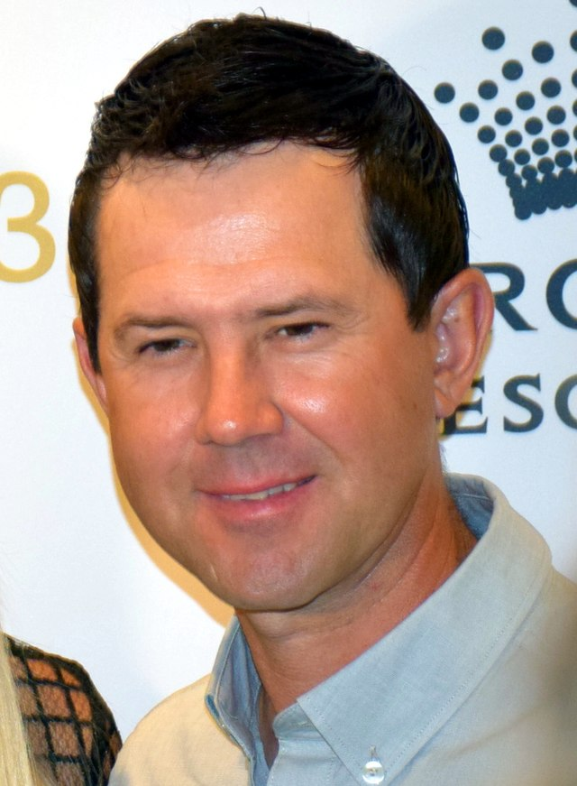
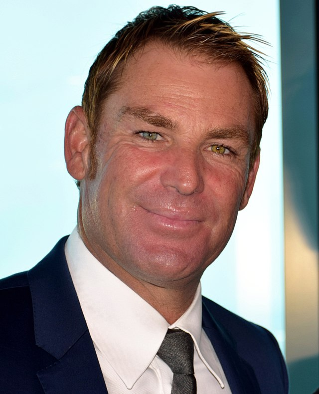

Australian cricket team, known for its rich history and competitive spirit, is one of the most successful teams in international
cricket. Representing Australia in all three formats—Test, One Day Internationals (ODIs), and Twenty20 (T20)—the team has secured
numerous World Cup titles and is renowned for its skilled players and strategic gameplay. With a strong emphasis on teamwork and
sportsmanship, the Australian cricket team continues to inspire fans and aspiring cricketers around the world.
Sir Donald Bradman

Sir Donald Bradman, born on August 27, 1908, in Cootamundra, New South Wales, is universally acknowledged as the greatest batsman in the history of cricket. His extraordinary talent and unparalleled achievements set him apart as a legend, whose influence on the game remains unmatched to this day.
Bradman’s cricketing journey began in rural Australia, where his natural ability with the bat quickly became evident. By the time he made his debut for New South Wales at the age of 19, Bradman was already being hailed as a prodigious talent. His Test debut for Australia came in 1928 against England, where he immediately showcased his remarkable skills. However, it was during the 1930 Ashes series in England that Bradman truly cemented his place as a cricketing icon. In that series, he scored an astounding 974 runs, including a monumental 334 in Leeds, a record that still stands as one of the greatest achievements in the sport.
Bradman’s batting average of 99.94 in Test cricket is a statistic that has become legendary, representing a level of consistency and excellence that has never been approached, let alone surpassed. Over the course of his 52-Test career, he amassed 6,996 runs, including 29 centuries, setting records that have stood the test of time. His precision, focus, and unparalleled ability to read the game made him a formidable opponent and a source of endless admiration.
In recognition of his incredible contributions to cricket, Bradman was knighted in 1949, becoming the only Australian cricketer to receive this honor. The knighthood was a testament not only to his sporting achievements but also to his impact on Australian culture and his role as a symbol of excellence in sportsmanship.
Bradman’s influence extended beyond the cricket field. His approach to the game, characterized by discipline, humility, and a relentless pursuit of perfection, became a benchmark for cricketers worldwide. Even after his retirement in 1948, Bradman remained involved in cricket as an administrator, selector, and mentor, helping to shape the future of Australian cricket.
Sir Donald Bradman passed away on February 25, 2001, at the age of 92, leaving behind a legacy that transcends cricket. His name is synonymous with greatness, and his contributions to the game have immortalized him as a true sporting legend. Bradman’s life and career continue to inspire generations of cricketers and sports enthusiasts, ensuring that his legend will live on for centuries to come.
Ricky Ponting

Ricky Ponting, born on December 19, 1974, in Launceston, Tasmania, is one of the most celebrated cricketers in the sport's history. His journey from a promising young talent to a cricketing legend is a testament to his extraordinary skill, determination, and leadership.
Ponting’s cricketing career began in domestic cricket, where his prodigious talent quickly set him apart. He made his debut for the Australian national team in 1995, and it wasn’t long before he established himself as a formidable presence in international cricket. Known for his aggressive batting style, Ponting’s flair for scoring runs was matched only by his sharp cricketing mind and tactical nous.
In 2004, Ponting was appointed captain of the Australian cricket team, a role in which he would go on to achieve remarkable success. Under his leadership, Australia enjoyed an unprecedented period of dominance in world cricket. His tenure as captain was highlighted by two ICC Cricket World Cup victories, first in 2003 and then in 2007, cementing his status as one of the sport’s great leaders. Ponting’s ability to inspire and motivate his team, coupled with his strategic acumen, played a crucial role in Australia’s success during this era.
Ponting's batting prowess was equally impressive. Over his career, he amassed more than 27,000 international runs, including 71 centuries, making him one of the most prolific run-scorers in cricket history. His performances were characterized by a rare combination of technical skill, aggressive intent, and mental fortitude. Whether anchoring an innings or accelerating the scoring rate, Ponting’s ability to adapt to different situations made him a match-winner time and again.
After retiring from international cricket in 2012, Ponting’s influence continued to be felt through his roles as a coach and commentator. His insights into the game, drawn from years of experience at the highest level, have been invaluable to both players and fans. As a commentator, he has provided expert analysis and engaging commentary, furthering his connection to the game.
Ponting’s impact on cricket extends beyond his statistics and achievements. His leadership, sportsmanship, and dedication to the game have inspired countless cricketers and fans around the world. His legacy is not only defined by his records but also by the respect and admiration he commands in the cricketing community. Ricky Ponting remains a towering figure in the world of cricket, celebrated for his extraordinary contributions both on and off the field.
Shane Warne

Shane Warne, born on September 13, 1969, in Ferntree Gully, Victoria, was a cricketing genius whose name became synonymous with the art of leg-spin bowling. Widely regarded as one of the greatest bowlers in the history of the sport, Warne's impact on cricket was profound and transformative, revolutionizing the role of spin bowling in the modern game.
Warne burst onto the international scene in 1992 when he made his Test debut for Australia against India. His early performances hinted at his immense potential, but it was during the 1993 Ashes series in England that Warne truly announced himself to the world. His first delivery in Ashes cricket, later dubbed the "Ball of the Century," dismissed England’s Mike Gatting and instantly etched Warne’s name into cricketing folklore. This delivery, a perfect leg-spinner that turned sharply to clip Gatting’s off stump, showcased Warne’s extraordinary skill and set the tone for a career filled with magic moments.
Over the course of his 15-year international career, Warne became the first bowler to take 700 Test wickets, a milestone that solidified his status as a cricketing legend. He finished his career with 708 Test wickets and 293 One Day International (ODI) wickets, making him one of the most successful bowlers in the history of the game. His ability to turn the ball sharply, combined with his exceptional tactical understanding of the game, made him a match-winner on countless occasions.
Beyond his technical prowess, Warne was known for his larger-than-life personality, both on and off the field. His charismatic presence and competitive spirit made him a fan favorite and an influential figure in the cricketing world. Warne’s contribution to Australia’s dominance in the 1990s and early 2000s was immense, playing a key role in the team’s multiple Ashes victories and their triumph in the 1999 ICC Cricket World Cup.
After retiring from international cricket in 2007, Warne continued to leave his mark on the game through commentary, coaching, and involvement in various Twenty20 leagues around the world. His insights as a commentator were highly respected, and his influence extended to mentoring young spin bowlers, helping to shape the next generation of cricketing talent.
Tragically, Shane Warne passed away on March 4, 2022, at the age of 52, while on holiday in Thailand. His sudden death sent shockwaves through the cricketing community and beyond, as the world mourned the loss of a true cricketing legend. Warne's legacy, however, remains immortal. His contributions to the game, his unforgettable performances, and his vibrant personality have left an indelible mark on cricket, ensuring that his name will be remembered for generations to come.
.png)